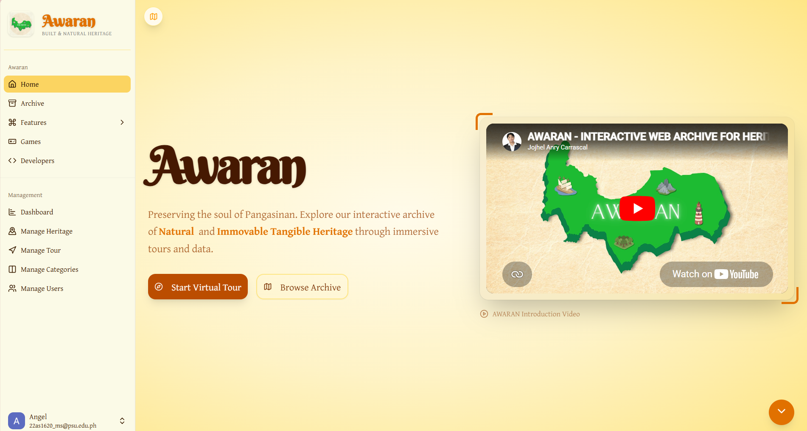

Download Resume
Projects
Internship
Technologies
Graduate
I'm an Information Technology graduate passionate about building modern websites, creating engaging digital experiences, and solving real-world problems through technology. I have experience in web development, graphic design, database management, and front-end development. During my internship at PRC CAR, I contributed to administrative task and database management. I also help developed AWARAN, a Digital Heritage Archive and Interactive Mapping System for Pangasinan.
My internship and professional experience.
Assisted in processing and verifying certification and authentication requests. Managed, encoded, and organized official records and documents for efficient retrieval and safekeeping.And supported the preparation, authentication, and release of official documents while maintaining client feedback records
Assisted during Sangguniang Bayan Public hearings and sessions held at the session hall. Transcribed recorded audio files by listening carefully and typing the discussions accurately. And delivered important documents and papers to different offices for signatory.
Some of the projects I've worked on.

A Digital Heritage Archive and Interactive Mapping System designed to preserve and promote the cultural heritage of Pangasinan. We developed it with my group for our capstone project
Let's connect! Feel free to reach out.